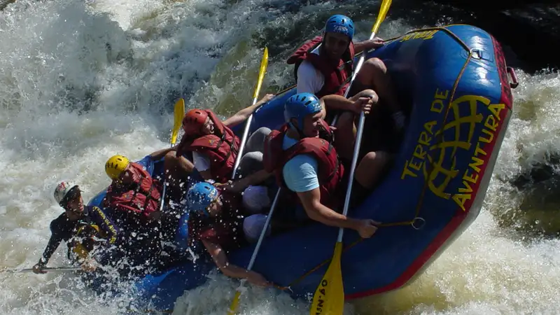

Rafting Songa adalah aktivitas arung jeram di aliran sungai berarus deras di Jawa Timur yang dikelola secara profesional dengan pemandu bersertifikat dan standar keselamatan ketat. Kegiatan ini cocok untuk pemula maupun peserta berpengalaman.
- Rafting Songa merupakan aktivitas arung jeram yang dikelola secara profesional dengan pemandu terlatih.
- Rute rafting umumnya dirancang bertingkat sehingga dapat diikuti pemula sampai peserta berpengalaman.
- Peralatan keselamatan standar seperti pelampung, helm, dan dayung disediakan pengelola.
- Durasi kegiatan bervariasi tergantung paket, umumnya berkisar dua hingga tiga jam di air.
- Pemilihan paket sebaiknya mempertimbangkan kondisi fisik, usia peserta, dan musim.
Apa Itu Rafting Songa?
Rafting Songa adalah kegiatan arung jeram di jalur sungai yang menawarkan kombinasi jeram, pemandangan alam, dan tantangan fisik ringan hingga menengah.
Nama "Songa" umumnya melekat pada operator rafting yang mengelola jalur sungai tertentu di Jawa Timur, lengkap dengan fasilitas start point, ruang ganti, dan area istirahat. Konsep dasarnya sama dengan arung jeram pada umumnya: sekelompok peserta mendayung perahu karet bersama-sama mengikuti arahan seorang pemandu yang duduk di bagian belakang perahu.
Sungai yang digunakan biasanya memiliki karakter arus yang bervariasi, mulai dari jeram ringan sampai jeram yang membutuhkan koordinasi tim lebih baik. Variasi ini yang membuat rafting Songa cocok untuk kelompok dengan latar belakang pengalaman berbeda, mulai dari keluarga, rombongan kantor, hingga komunitas pecinta olahraga air.
Mengapa Rafting Songa Menjadi Pilihan Wisata Petualangan?
Rafting Songa menjadi pilihan populer karena menawarkan sensasi memacu adrenalin sekaligus kedekatan dengan alam tanpa memerlukan keahlian khusus sebelumnya.
Beberapa alasan yang membuat aktivitas ini banyak diminati:
- Aksesibilitas: lokasi start umumnya relatif mudah dijangkau dari kota-kota besar di Jawa Timur.
- Keramahan untuk pemula: instruktur memberikan briefing keselamatan sebelum kegiatan dimulai.
- Nilai kebersamaan: cocok untuk kegiatan team building, family gathering, atau sekadar liburan bersama teman.
- Pemandangan alam: jalur sungai biasanya melewati area perbukitan atau hutan yang masih asri.
Tren wisata petualangan berbasis alam secara umum terus diminati di Indonesia, terutama pada akhir pekan dan musim liburan, karena menawarkan alternatif rekreasi di luar wisata konvensional seperti pusat perbelanjaan.
Apakah Rafting Songa Aman untuk Pemula?
Rafting Songa umumnya aman untuk pemula selama peserta mengikuti arahan pemandu, menggunakan perlengkapan keselamatan lengkap, dan dalam kondisi fisik yang sehat.
Standar keselamatan yang biasa diterapkan operator rafting profesional meliputi:
- Pemberian pelampung (life jacket) dan helm kepada setiap peserta.
- Briefing teknik dayung dan prosedur darurat sebelum turun ke sungai.
- Pendampingan pemandu bersertifikat di setiap perahu.
- Tim penyelamat (rescue team) yang siaga di sepanjang jalur sungai.
- Batasan usia dan kondisi kesehatan tertentu, misalnya tidak disarankan untuk ibu hamil atau peserta dengan riwayat penyakit jantung.
Meski demikian, arung jeram tetap tergolong olahraga air dengan risiko fisik. Peserta yang memiliki kondisi kesehatan khusus sebaiknya berkonsultasi dengan dokter sebelum mengikuti kegiatan ini, dan selalu mengikuti instruksi pemandu di lapangan tanpa terkecuali.
Berapa Lama Durasi Rafting Songa?
Durasi rafting Songa umumnya berkisar antara dua hingga tiga jam di air, belum termasuk waktu persiapan, briefing, dan istirahat setelah kegiatan selesai.
Total waktu yang perlu disiapkan peserta biasanya lebih panjang dari waktu di air itu sendiri, karena mencakup:
- Registrasi dan pembagian perlengkapan.
- Briefing keselamatan dan teknik dasar mendayung.
- Perjalanan menuju titik start (start point).
- Sesi arung jeram di sungai.
- Waktu bersih-bersih dan istirahat di titik finish.
Total waktu yang dibutuhkan dari awal sampai akhir kegiatan dapat mencapai setengah hari, tergantung paket yang dipilih dan jumlah peserta dalam rombongan.
Apa Perbedaan Rafting Songa dengan Rafting Malang?
Rafting Songa dan rafting Malang sama-sama menawarkan pengalaman arung jeram di Jawa Timur, namun berbeda dari sisi lokasi sungai, operator pengelola, dan karakter jeram yang dilalui.
Istilah "rafting Malang" biasanya merujuk secara umum pada berbagai operator arung jeram yang beroperasi di wilayah Malang Raya dan sekitarnya, sementara rafting Songa merupakan aktivitas yang terasosiasi dengan operator dan jalur sungai spesifik. Perbedaan utama yang biasanya perlu diperhatikan calon peserta meliputi:
- Jarak tempuh dari kota asal peserta menuju lokasi start.
- Karakter arus dan tingkat kesulitan jeram di masing-masing sungai.
- Fasilitas pendukung seperti area parkir, ruang ganti, dan konsumsi.
- Harga paket yang dapat berbeda tergantung operator dan fasilitas yang ditawarkan.
Bagi peserta yang berdomisili di area Malang, penting untuk membandingkan jarak tempuh dan fasilitas sebelum memutuskan mengikuti rafting Songa atau operator rafting lain di sekitar Malang.
Apa Saja Kesalahan Umum yang Perlu Dihindari Saat Rafting Songa?
Kesalahan umum saat rafting Songa biasanya berkaitan dengan kelalaian mengikuti instruksi keselamatan dan kurangnya persiapan fisik maupun perlengkapan sebelum kegiatan dimulai.
Beberapa kesalahan yang sering terjadi antara lain:
- Tidak menyimak briefing keselamatan dengan serius karena dianggap formalitas.
- Melepas pelampung atau helm secara sepihak saat berada di air.
- Membawa barang berharga tanpa wadah kedap air, sehingga berisiko rusak atau hilang.
- Memaksakan diri mengikuti kegiatan meski kondisi tubuh sedang tidak fit.
- Tidak mengikuti aba-aba pemandu saat melewati jeram yang lebih menantang.
Menghindari kesalahan-kesalahan tersebut dapat meningkatkan kenyamanan sekaligus keselamatan selama kegiatan berlangsung.
Tips Memilih Paket Rafting Songa yang Tepat
Memilih paket rafting Songa yang tepat sebaiknya mempertimbangkan tingkat kesulitan rute, jumlah peserta dalam rombongan, dan fasilitas tambahan yang disediakan operator.
Beberapa hal yang perlu diperhatikan sebelum memesan paket:
- Sesuaikan tingkat kesulitan jeram dengan pengalaman peserta, terutama jika membawa anak-anak atau lansia.
- Perhatikan fasilitas tambahan seperti transportasi antar-jemput, konsumsi, dan dokumentasi foto.
- Tanyakan kebijakan pembatalan atau reschedule jika terjadi kondisi cuaca ekstrem.
- Pastikan operator memiliki pemandu bersertifikat dan peralatan keselamatan yang layak.
- Bandingkan beberapa operator, termasuk rafting Songa dan operator rafting Malang lainnya, sebelum menentukan pilihan.
FAQ
Apa itu rafting Songa?
Rafting Songa adalah kegiatan arung jeram di jalur sungai berarus deras yang dikelola operator profesional dengan pemandu bersertifikat dan standar keselamatan tertentu.
Apakah rafting Songa cocok untuk anak-anak?
Kecocokan tergantung kebijakan usia minimum masing-masing operator dan tingkat kesulitan jeram; sebaiknya tanyakan langsung kepada penyedia paket sebelum mengajak anak-anak.
Berapa jumlah minimal peserta dalam satu perahu rafting Songa?
Jumlah peserta per perahu biasanya diatur operator demi keseimbangan dan keselamatan, umumnya berkisar beberapa orang ditambah satu pemandu.
Arya
Penulis artikel yang sudah berpengalaman di dalam dunia wisata outbound Batu Malang.